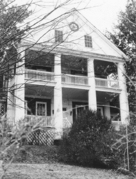

120 Church Steet
Staunton, Virginia

-
Constructed: 1791 (south wing:1844)
-
Original Use: Residence
-
Ownership History: Stuart family house. Family tradition holds
that Archibald Stuart received plans or design suggestions from
Thomas Jefferson, under whom Stuart had studied law. South wing
designed by Alexander H.H. Stuart.
-
Number of Stories: 2
-
Architectural Style: Jeffersonian Neo-Classical.
-
Exterior Features: Brick construction with Flemish Bond. Gabled
roof on main building with hip roof on south wing. Two-story
pedimented portico over porch. Tuscan columns on portico with
dentils in cornices. Swan-neck frontispiece on north elevation.
Smokehouses adjacent to main house.
-
Interior Features: Georgian-style woodwork, mantles,
etc.